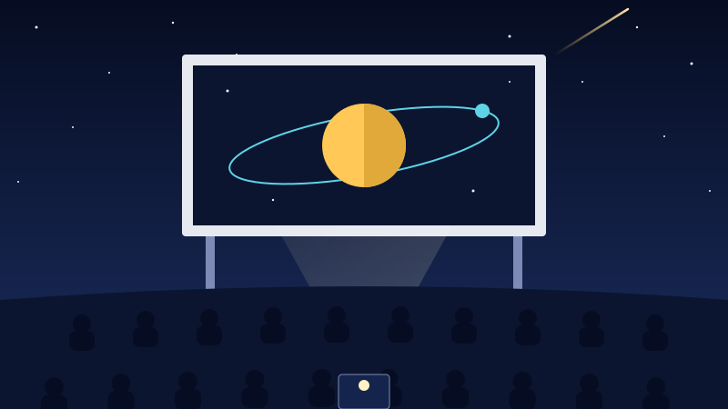
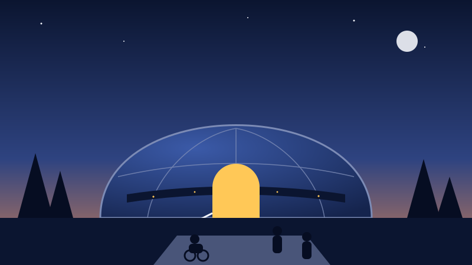
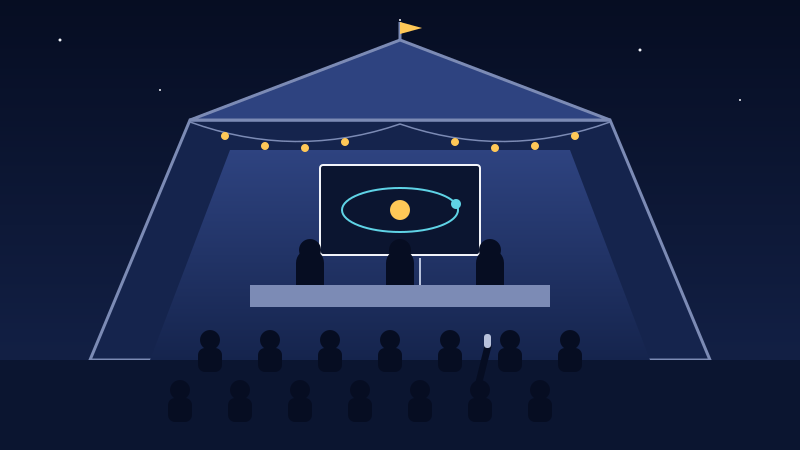
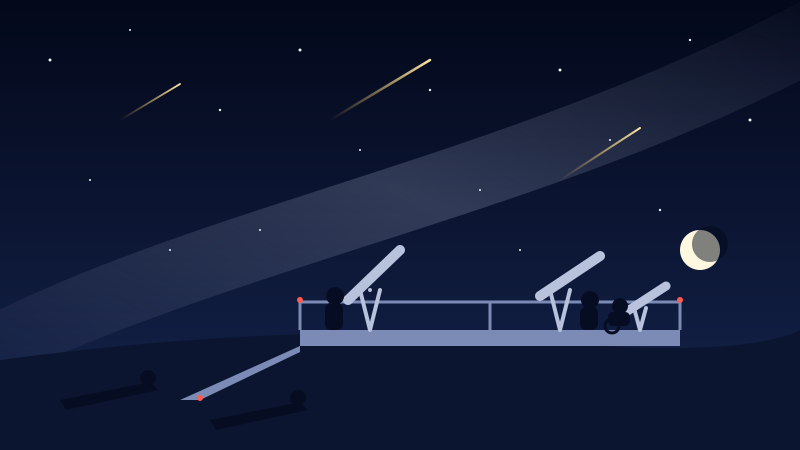
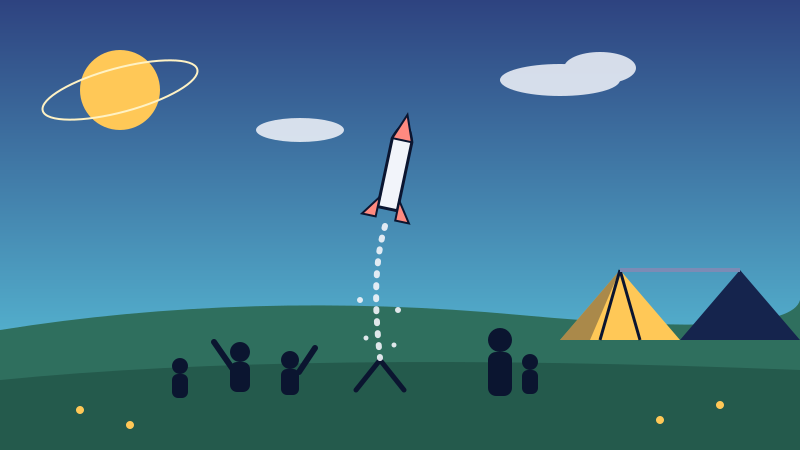

Scény
Festivalový areál Pole pod kopulí má pět scén. U každé najdete kapacitu, vybavení a podrobné informace o bezbariérovém přístupu. Plánek areálu je v Praktických informacích.
Letní kino Kopule

Hlavní open-air scéna s velkým plátnem pod širým nebem. Večerní premiéry, slavnostní zahájení a půlnoční projekce.
Přístupnost: částečně bezbariérová
Vyhrazená místa pro vozíky v první řadě na zpevněné ploše, přístup po dřevěném chodníku od hlavního vstupu. Zbytek hlediště je na trávě.
Vybavení
- plátno 18 × 8 m
- digitální projekce 4K
- lehátka a deky k zapůjčení
Sál Planeta

Krytý nafukovací dóm s klimatizací. Projekce za každého počasí, soutěž krátkých filmů a rodinné projekce.
Přístupnost: bezbariérová
Bezbariérový vstup po rampě, 6 míst pro vozíky, indukční smyčka pro nedoslýchavé.
Vybavení
- digitální projekce
- prostorový zvuk
- indukční smyčka
Stan Teorie

Debatní a přednáškový stan. Rozhovory s tvůrci po projekcích a přednášky vědců.
Přístupnost: bezbariérová
Zpevněná podlaha bez prahů, místa pro vozíky v zadní řadě, přednášky s přepisem na obrazovce.
Vybavení
- projektor
- mikrofony pro publikum
- obrazovka s živým přepisem
Noční pozorovatelna

Pozorovací plošina s dalekohledy a lehátky pro sledování meteorů. Ve dne pozorování Slunce přes bezpečné filtry.
Přístupnost: částečně bezbariérová
Plošina je přístupná rampou, jeden dalekohled má nízko položený okulár pro pozorování z vozíku. Okolí je travnaté, v noci jen tlumené červené osvětlení.
Vybavení
- 6 dalekohledů
- 2 dalekohledy se slunečním filtrem
- lehátka
- červené orientační osvětlení
Raketová louka

Denní program pro děti a rodiny: dílny, vodní rakety, pohádky o souhvězdích a hry.
Přístupnost: částečně bezbariérová
Travnatý povrch, hlavní trasa a dílenský stan jsou na zpevněném chodníku. U louky je přebalovací a kojicí koutek.
Vybavení
- dílenský stan
- odpaliště vodních raket
- stín a pitná voda